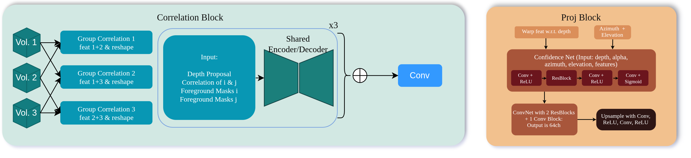

1. Viewpoint Selection via Projected Delaunay Triangulation
To synthesize a query viewpoint $\mathbf{q}$, we select a sparse set of three supporting input cameras. While standard $k$-Nearest Neighbor selection often yields poorly conditioned configurations, we propose a projection-based strategy leveraging 2D Delaunay triangulation to ensure the query is spatially bracketed by its neighbors.
For inward-facing setups, we fit a cylinder to the camera centers and perform a two-stage projection: Radial Normalization to remove depth bias, followed by Perspective Mapping onto a projection plane. After computing the triangulation $\mathcal{T}$, we identify the enclosing triangle via the Müller-Trumbore ray intersection algorithm, ensuring the selected triplet provides an enclosing view coverage.
2. Efficient Feature Extraction Backbone
To satisfy real-time constraints, we utilize a hierarchical backbone built upon GhostNetV2. Each block uses a Ghost module where a subset of feature maps is produced via standard convolution, while the remaining channels are generated through inexpensive depthwise operations. This significantly reduces redundancy without sacrificing representational capacity.
The backbone generates a seven-level feature pyramid $\{\mathcal{F}_i^l\}_{l=0}^{6}$. To compensate for spatial detail loss in deeper layers, we append a Lightweight Atrous Spatial Pyramid Pooling (L-ASPP) module at the coarsest level. This module aggregates multi-scale context through distinct dilation rates, enriching the representation with global information while maintaining a low computational footprint.
3. Recursive Depth Estimation and Refinement
We estimate dense depth maps for the novel view using a recursive plane-sweep stereo formulation. At the coarsest level, we initialize 32 depth hypotheses uniformly. For finer levels, the search space is refined using a local window around the upsampled prediction from the previous stage: $\mathcal{D}^l = \{ D^{l+1}_{\uparrow} + \delta \}$.
To preserve matching cues, we construct grouped correlation volumes. Feature channels are partitioned into $G$ groups, and group-wise correlations are computed at each depth hypothesis. This volume is processed alongside warped foreground masks and upscaled latents $Z^{l+1}$ from the feature projector which acts as a guiding self-prior. A shared decoder then regresses a depth residual $\Delta^l$ and an opacity map $A^l$, allowing for sub-pixel accuracy through iterative updates.
4. Hierarchical Feature Fusion and Synthesis
The final stage warps source features into the target frame using the estimated depth $D^l$. To account for occlusions and view-dependent effects, a confidence prediction network generates per-pixel weights $W_i^l$ based on the warped features and geometric metadata (azimuth and elevation).
Image synthesis is performed by a strictly hierarchical decoder. At each level, the fused features are combined with the refined depth, opacity maps, and upsampled latents from coarser levels. This formulation ensures that global structures estimated at low resolutions effectively regularize high-frequency detail synthesis at finer scales. The final latent $Z^0$ is then mapped to the RGB output $I_{\text{novel}}$ via a lightweight refinement head.